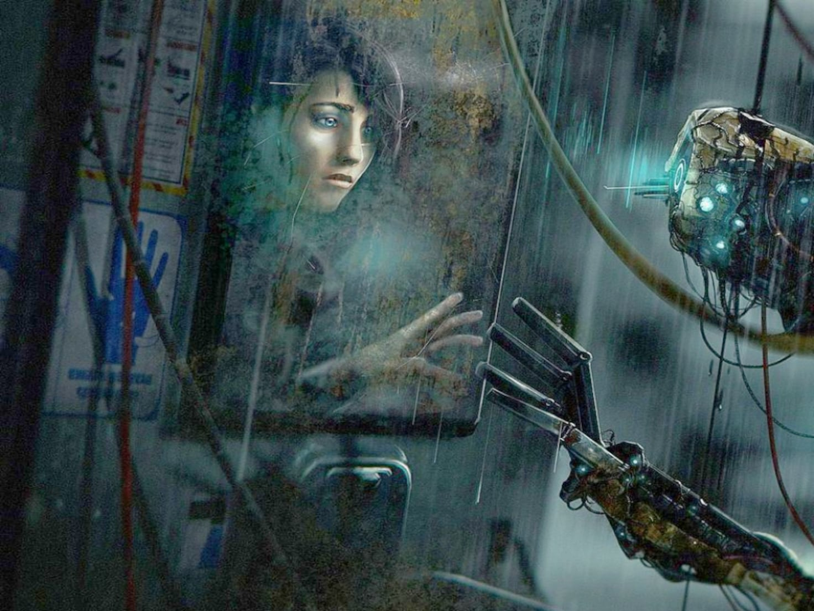
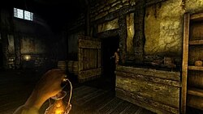
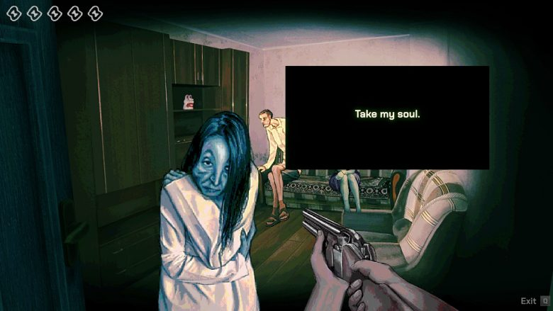

As horror games moved beyond their early foundations, the genre began to shift inward. The focus was no longer solely on survival, monsters, or confined spaces—it became centered on the mind. The 2000s marked a turning point where horror was no longer just something the player faced, but something they interpreted. Fear became psychological, symbolic, and deeply personal.
A defining moment in this shift can be seen in Silent Hill 2. Rather than relying on constant threats or action, the game explored themes of guilt, grief, and identity. Its environments reflected the protagonist’s inner state, and its monsters were not random—they were manifestations of thought and emotion. The horror was not always immediate or visible. It lingered in atmosphere, in sound, in silence, and in the meaning behind what the player experienced. This marked a major evolution: horror games could now function as psychological narratives, not just survival challenges.

As the genre progressed, this inward focus expanded. Games began to strip away traditional mechanics like combat, replacing them with vulnerability and helplessness as core experiences. Amnesia: The Dark Descent exemplifies this shift. Players are unable to fight back, forced instead to hide, run, and endure. The game introduces mechanics tied directly to mental stability, reinforcing the idea that fear affects not only the environment, but the character’s perception of it. Darkness, sound, and uncertainty all contribute to a constant state of unease. The player is not overcoming horror—they are surviving it psychologically.
This era also allowed horror to become more abstract and experimental. Meaning was no longer always clear or direct. Instead, games invited players to question what was real, what was imagined, and what it all represented. SOMA pushed this even further, exploring existential themes of consciousness, identity, and what it means to be human. The fear in SOMA is not only in its environments or encounters, but in the ideas it presents. It leaves players with questions that extend beyond the game itself, creating a lasting psychological impact.
Smaller and experimental titles, including works like No, I’m not a Human, continue this trajectory by embracing ambiguity and discomfort. These games often reject traditional structure entirely, presenting fragmented narratives, distorted visuals, and unclear objectives. The player is placed in unfamiliar systems where understanding is not guaranteed. This reinforces a core idea of psychological horror: fear does not always come from what is known, but from what cannot be fully understood.

Across this era, horror games evolved into experiences that demand interpretation. They rely less on direct confrontation and more on atmosphere, symbolism, and emotional weight. The player becomes an active participant not only in navigating the game, but in constructing its meaning. Every detail—visual, auditory, or narrative—can carry significance, or none at all.
The psychological horror evolution redefined the genre. It proved that fear could exist without constant danger, that tension could be sustained through uncertainty, and that the most lasting horror is often internal. Rather than asking players to survive what is in front of them, these games ask them to confront what lies beneath—within the world, and within themselves.